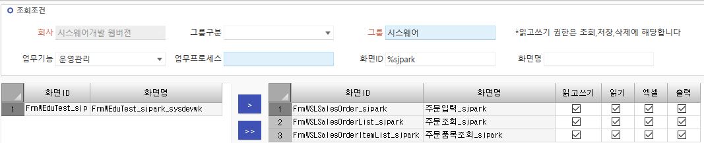
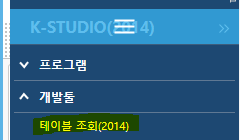
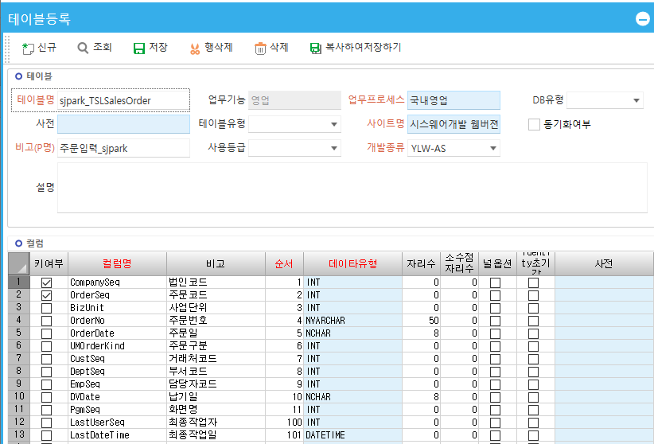
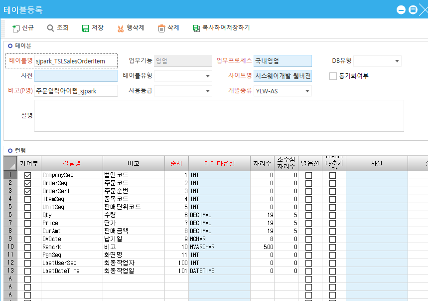
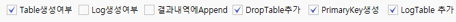
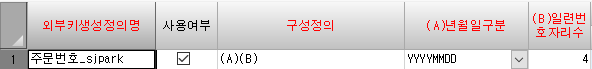
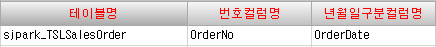

2. 권한부여 및 테이블 등록
- 권한 부여
운영관리 - 권한 – 화면권한 - 그룹별 프로그램 권한등록

==============================================================
-
만들기 (신규)
K-STUDIO(2014) - 개발툴 - 테이블 조회 => ‘테이블신규등록‘ 클릭

* 테이블 등록 (만들기)
- master영역 / item영역 총 2개 작성


데이터유형
NVARCHAR는 공백이 없다
NCHAR는 공백 존재
ex. NCHAR ‘1234 ’
NVARCHAR ‘1234’
둘이 더하면 => ‘1234 1234’
* 대부분 – INT – INT형은 자리수가 필요 없다
CompanySeq 회사명 – 필수 (키 값)
OrderSeq 테이블 키 값
키 값은 정수형이므로 int (코드값은 대부분 int)
* 날짜 – NCHAR – 자리수 8
8자리 고정
* 주문번호 – NVARCHAR – 자리수 50
YYYYMMDD + 순번4 = 12자리
(A) (B)
대부분 (A)(B)지만 회사마다 다르므로 넉넉하게 50자리)
* 최종수정일 - DATETIME
시분초도 들어가기 때문
키여부
CompanySeq 는 고정
item테이블은 키값이 serl까지 포함해서 3개
마스터키값 1개 / 품명 1개 => 품명 말고 따로 순서를 키 값으로 설정
(순번을 키 값으로)
CompanySeq 까지 총 3개
==============================================================
- 테이블 스크립트 생성
K-STUDIO – 개발툴 - table명 작성 - 조회 - 테이블선택 – 추가

체크 해야할 것 4가지
Table생성여부, DropTable추가, PrimaryKey생성, LogTable추가
=> 스크립트생성테이블 나옴
=> 전체 선택
테이블스크립트를 sql에 복붙 (마지막 go지우기)
===> 테이블이 데이터베이스에 생성된다
- 업무별외부키생성
외부키생성정의명
그림의 외부키

